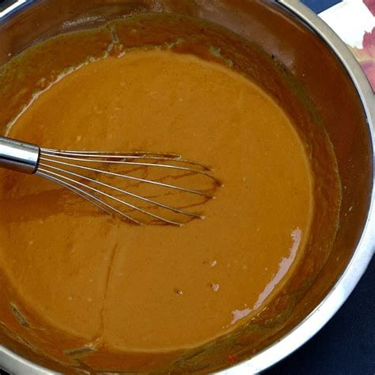

Directions

- Make the dough by hand. In a medium bowl, whisk together the flour, sugar, and salt. Using your fingers, work the butter into the dry ingredients until it resembles yellow corn meal mixed with bean-sized bits of butter. (If the flour/butter mixture gets warm, refrigerate it for 10 minutes before proceeding.) Add the egg and stir the dough together with a fork or by hand in the bowl. If the dough is dry, sprinkle up to a tablespoon more of cold water over the mixture
- Alternatively, make the dough in a food processor. With the machine fitted with the metal blade, pulse the flour, sugar, and salt until combined. Add the butter and pulse until it resembles yellow corn meal mixed with bean-sized bits of butter, about 10 times. Add the egg and pulse 1 to 2 times; don't let the dough form into a ball in the machine. (If the dough is very dry add up to a tablespoon more of cold water.) Remove the bowl from the machine, remove the blade, and bring the dough together by hand.
- Form the dough into a disk, wrap with plastic wrap, and refrigerate until thoroughly chilled, at least 1 hour.
- On a lightly floured surface, roll the dough with a rolling pin into a 12-inch circle about 1/8-inch thick. Transfe2Alternatively, make the dough in a food processor. With the machine fitted with the metal blade, pulse the flour, sugar, and salt until combined. Add the butter and pulse until it resembles yellow corn meal mixed with bean-sized bits of butter, about 10 times. Add the egg and pulse 1 to 2 times; don't let the dough form into a ball in the machine. (If the dough is very dry add up to a tablespoon more of cold water.) Remove the bowl from the machine, remove the blade, and bring the dough together by hand.
- Set separate racks in the center and lower third of oven and preheat to 400 degrees F. Put a piece of parchment paper or foil over the pie shell and fill with dried beans or pie weights. Bake on a baking sheet on the center rack until the dough is set, about 20 minutes. Remove from the oven and lift sides of the parchment paper to remove the beans. Continue baking until the pie shell is lightly golden brown, about 10 more minutes. Cool on a rack.
- Set separate racks in the center and lower third of oven and preheat to 400 degrees F . Put a piece of parchment paper or foil over the pie shell and fill with dried beans or pie weights. Bake on a baking sheet on the center rack until the dough is set, about 20 minutes. Remove from the oven and lift sides of the parchment paper to remove the beans. Continue baking until the pie shell is lightly golden brown, about 10 more minutes. Cool on a rack.
- Lower the oven temperature to 350 degrees F.
- While the pie shell is cooling make the filling. In a large bowl, whisk together the pumpkin, brown sugar, eggs, half-and-half, spices, and salt until smooth. Return the pie shell to the baking sheet and pour in the filling.
- Bake on the lower oven rack until the edges of the filling are set but the center is still slightly loose, about 50 to 60 minutes. (If the edges get very dark, cover them with aluminum foil.) Cool on a rack. Serve room temperature or slightly warm.